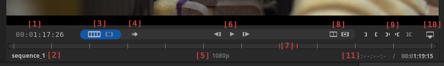
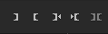

Monitor Controls

[1] Timecode Timecode of current position on current source media.
[2] Source Media Name Display Name of the source displayed in the Monitor.
[3] Source Switcher Swiching between Timeline and Clip Source Monitor.
[4] Preview Options Menu Interpolation, preview scaling and hardware encoding options.
[5] Preview Image Height Display Image height of currently active preview scaling option.
[6] Play/Stop, Next and Prev Buttons Playback and seek controls.
[7] Monitor Position Bar Allows for seeking currently displayed media with mouse.
[8] Trim View and Monitoring Menus Trim view and image monitoring options.
[9] Mark Buttons Setting, seeking to and clearing Mark In and Mark Out on current media.
[10] 3-point Edit Menu 3-point edit actions.
[11] Marked Range and Monitor Source Length Display Length of marked range on the left and the length of the currently displayed media on the right.
Sequence and Clip Source Monitoring
Flowblade Monitor allows preview of different media sources.
- Sequence Source source shows the current displayed frame of the Sequence on the Timeline.
- Clip Source shows the current displayed frame of Clip Source media loaded into Monitor.
Switching between Sequence and Clip Sources
[3] Source Switcher has two buttons on blue backgroud that can be used to switch between monitor soueces.
- Sequence Source button is on the left with an icon displaying a sequence film frames.
- Clip Source button is on the right with an icon displaying a single film frame.
Switching to view Sequence Source
- Use [3] Source Switcher.
- Click on Timeline when Clip Source is displayed.
- Press TAB key to toggle between source views.
Switching to view Clip Source
- Use [3] Source Switcher.
- Drag Media Item from Media panel on top of the monitor.
- Drag Clip from the Timeline on top of the monitor.
- Press Right Mouse on a Clip on the Timeline and select item Open in Monitor from popup menu.
- Press TAB key to toggle between source views.
Playback and seeking
Playback
- Press Space Bar key to start/stop playback.
- Press [6] Play/Stop button to start/stop playback.
Seek
- Drag with Left Mouse on the [7] Monitor Position Bar.
- Click Left Arrow key or Right Arrow key to move to the next or the previous frame.
- Press [6] Prev or [6] Next buttons to move to the next or the previous frame.
- Click Up Arrow key or Down Arrow.
- When viewing Clip Source playhead moves to next or previous of the following: Mark In / Mark Out / Start / End.
- When viewing Sequence Source playhead moves to next or previous of the following: Next Cut on Timeline / Mark In / Mark Out / Start / End.
J, K, L Playback and Seek
Keys J, K and L provide a unified interface to a shuttle style seek and playback.
J,K,L Playback Speeds: -32.0x, -16.0x, -8.0x, -1.0x, -0.35x, 0.0, 0.35x, 1.0x, 1.8x, 3.0x, 5.0x, 8.0x
- Pressing key L selects the next speed forward of the available playback speeds.
- First press when paused starts playback at 0.35x speed forward.
- Pressing L increases speed during forward playback until 8.0x playback speed achieved.
- Pressing L decreases speed during backwards playback until playback is paused and playback direction changes.
- Pressing key J selects the next speed backward of the available playback speeds.
- First press when paused starts playback at 0.35x speed backwards.
- Pressing J increases speed during backwards playback until 32.0x playback speed achieved.
- Pressing J decreases speed during forward playback until playback is paused and playback direction changes.
- Pressing key K pauses playback.
Setting Mark In and Mark Out

Mark Buttons from left to right:
- Set Mark In
- Set Mark Out
- Go to Mark In
- Go To Mark Out
- Clear Marks
Keyboard shortcuts for Marks actions:
- Set Mark In - I
- Set Mark Out - O
- Go to Mark In - ALT + I
- Go To Mark Out - ALT + O
- Clear Marks - ALT + K